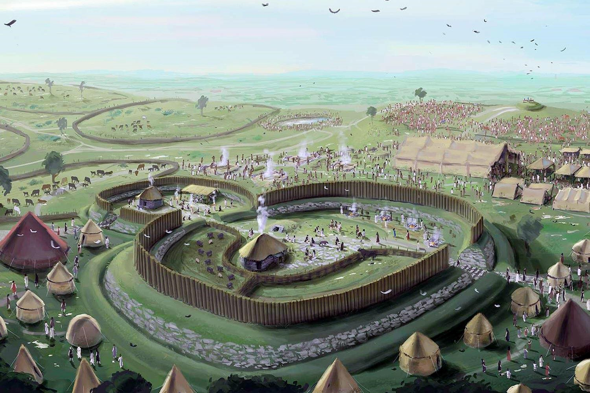

Uisneaċ?

Mide son of Braṫ, son of Deoṫ, was the first to light a fire in Érin for the clans of Nemed, and it was six years a-blaze, and from that fire was kindled every chief fire in Érin. Wherefore Mide’s successor is entitled to a sack [of corn] with a pig from every house-top in Ireland. And the druids of Ireland said: "Tis an evil smoke (mí dé) for us, this fire that hath been lit in the land’. So the druids of Ireland were collected into one house, and, by Mide’s advice, their tongues were cut out of their heads, and he buried them in the ground of Uisneċ, and Mide, chief wizard and chief historian of Ireland, sat above them. Then said Gaireċ Gumor’s daughter, Mide’s fostermother: ‘Sublime (uais) is one (neċ) who is here tonight’. Whence Uisneċ and Mide.
From ancient times until the fall of the Gaelic Order, a sacred fire at Uisneaċ was lit on Beltaine each year to initiate the Mórdáil Uisneaċ, the Great Assembly. Uisneaċ was built at the intersection of the four regional kingdoms Ulaid, Laigin, Mumu, and Connauġt, and sat along the Rót na gCarpat, the Road of Chariots, or Slige Assail, the Way of Assal, connecting the royal sites of Laigin to the palaces of Connauġt. As such Uisneaċ became spiritually the Umbilicas Hibernicae, the Navel of Ireland. It was a ceremonial gathering place for kings, possibly where the High King would symbolically marry the goddess Ériu in the banais ríghe ritual, or Marriage of the King. Some excavators of the Hill believed that a fire was kept there perpetually into the Christian Age, kept alight by woman-druids in a similar fashion to Rome’s sacred flame tended by Vestal Virgins.